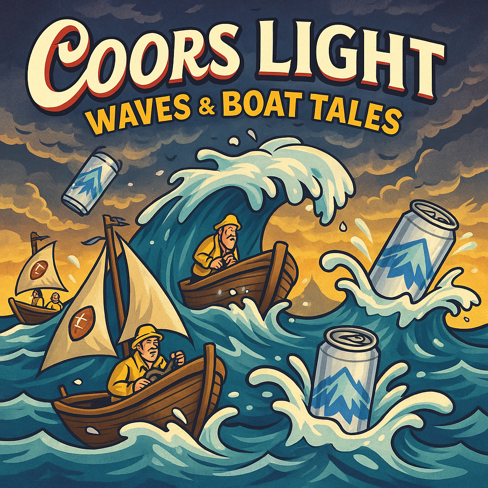
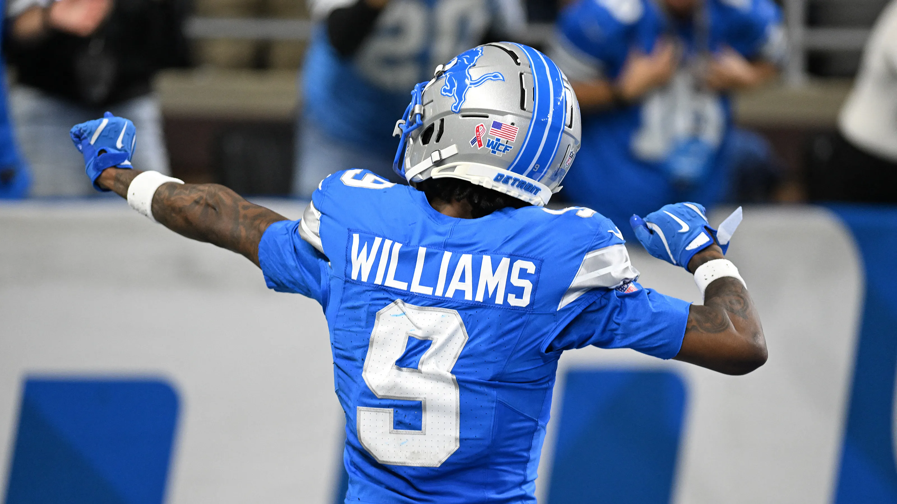
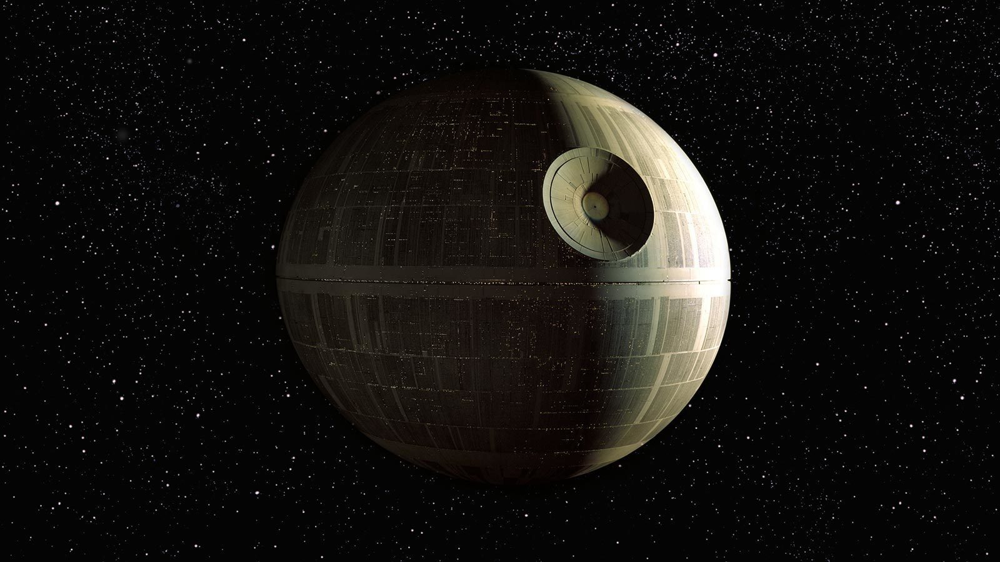
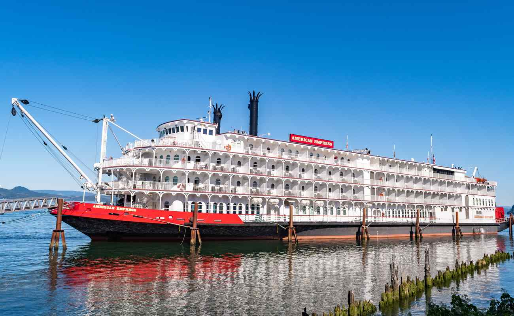
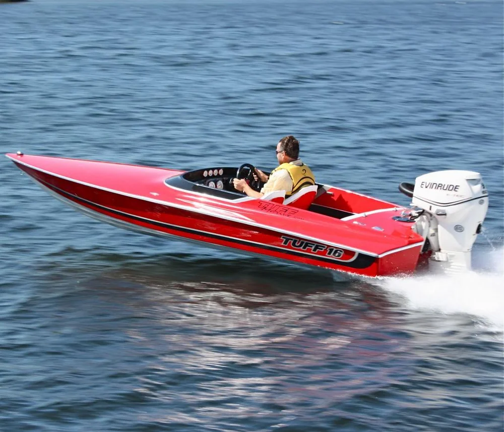
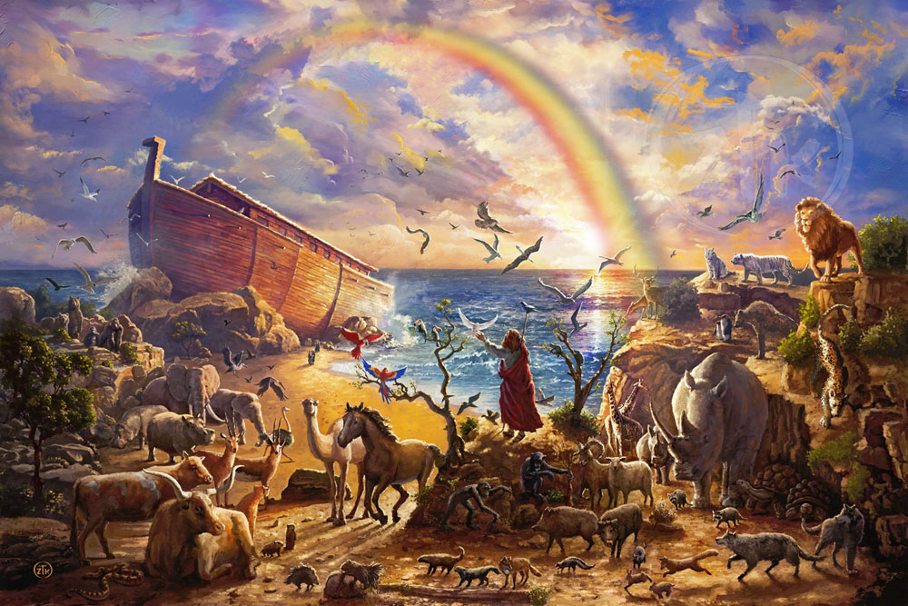
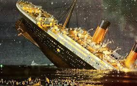
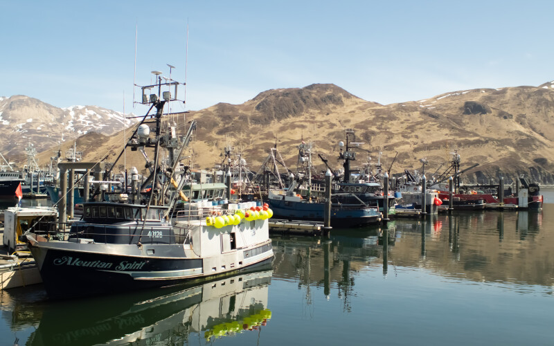
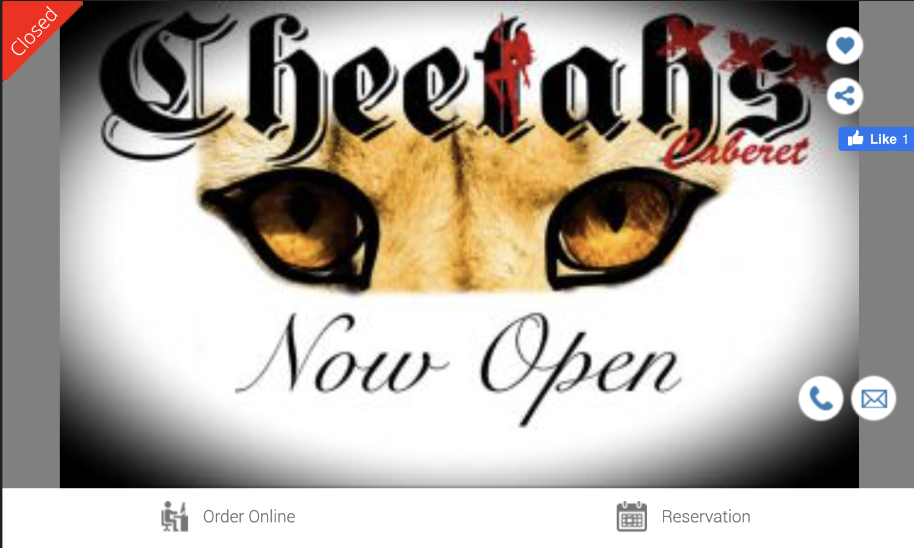
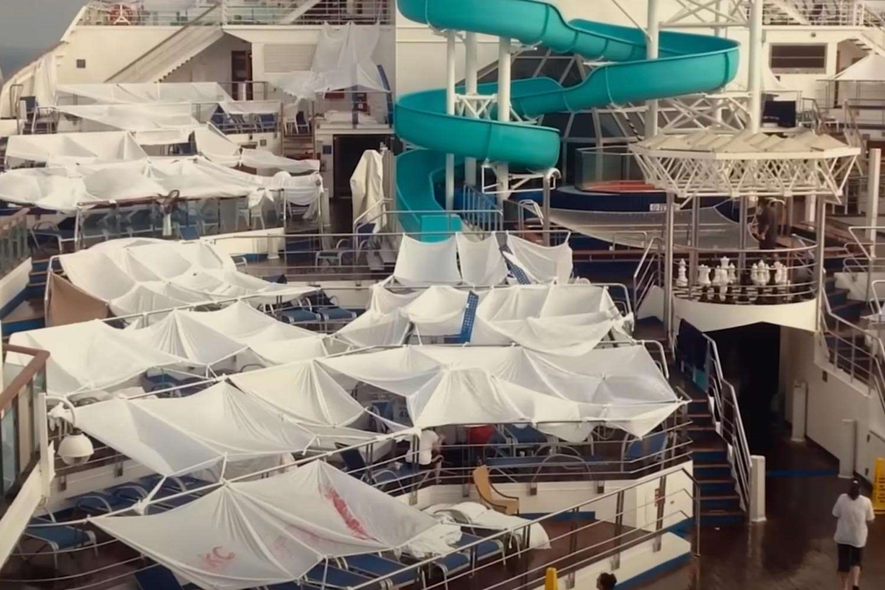

As Week 11 draws upon us like a storm in the Bering Sea, every ship in this league is taking waves over the bow. Some of you are cruising with the wind at your back, others are duct-taping holes in the hull and pretending it’s “part of the process.”In our Sleeper era, only a couple of six-loss teams have stumbled into the playoffs. A few of you are already surfing that 6-L swell like it’s a warm Coors Light wave, and a couple more are one bad week away from hitting the mayday channel. Even the most seasoned seamen (yes, seemen) can feel the deck starting to soften.
Fleet Status
- Spitters not Quiters – 7–3, PF: 1421.68, PA: 1144.98, FAAB: $25
- London Tee Party – 6–4, PF: 1244.44, PA: 1280.10, FAAB: $36
- Achane Reaction – 6–4, PF: 1233.00, PA: 1153.56, FAAB: $10
- Neon Keon – 6–4, PF: 1218.18, PA: 1108.32, FAAB: $0
- Mr. Turna 2-to-uh-Titanic – 6–4, PF: 1114.74, PA: 1154.64, FAAB: $0
- Boswell that ends well. – 5–5, PF: 1272.90, PA: 1328.74, FAAB: $14
- It’s just a Ladd – 4–6, PF: 1200.12, PA: 1283.00, FAAB: $62
- Josh Allen’s New Phat Hog – 4–6, PF: 1109.50, PA: 1295.52, FAAB: $9
- Im sorry, Mc-Jackson, ooh – 3–7, PF: 1244.20, PA: 1261.62, FAAB: $0
- Barbeque Gibbs – 3–7, PF: 1084.72, PA: 1132.99, FAAB: $44
Week 11 Matchups – Choppy Water Edition
- Mr. Turna 2-to-uh-Titanic (6–4) vs Im sorry, Mc-Jackson, ooh (3–7)
- My ship, the Titanic, immediately hits an iceberg: down 44.40 to 2.70 after Thursday. Seif is the cursed ship that somehow still has cannons; if this turns into a blowout, the name change is going to feel a little too prophetic.
- Achane Reaction (6–4) vs Barbeque Gibbs (3–7)
- Achane Reaction opens up 37.00 to 14.30. This is the difference between cruising to 7–4 or suddenly staring down that six-loss whirlpool. Gibbs is mostly playing for pride, spite, and the joy of dragging someone else to the bottom.
- It’s just a Ladd (4–6) vs Boswell that ends well. (5–5)
- Ladd trails 19.10 to 44.74 early and may be approaching full send on that $62 FAAB. Probably not though, Tony seems to think you can spend your saved FAAB in Vahalla. PJ is treading water at 5-5, but is off to hot start on his cigarette boat, does he have the gas to get to the finish line?
- Spitters not Quiters (7–3) vs Josh Allen’s New Phat Hog (4–6)
- 9.80 to 4.70 after Thursday is nothing when Josh Allen is involved. Pangy is clinging to the side of the boat, hoping for a 35-point wave to drag the flagship under. Matchup of the Week
London Tee Party (6–4) vs Neon Keon (6–4) – Matchup of the Week * 27.94 for Neon vs 10.60 for London to start, in a dead-even seeding game. Winner gets to say, “I’m a contender, clean my poop deck,” while the loser starts refreshing the standings page like they’re stuck watching the GameCast of a match up they just max-bet.

Waiver Wire Spice 🌶️ * I was really hoping the Jameson William was going to make it to super sale Sunday, but unfortunately he was snagged by that BBQ team for $1. Way to go Chris.
*Disclaimer I don’t know shit about Football, or Boats.
1. Kris (7-3) ⬆️

Kris is much more than a boat, he’s surpassed all expectations. Clear #1. PF leader by a chunk, rock-solid record, and almost no true dud weeks. Still has FAAB ammo, he throws around just to toy with us, which is unfair. Until someone actually hands this roster a real loss, the rest of the league is just flying X-wings and praying.2. Neil (6-4) ⬇️

Neil moves down only because Kris looks so absurdly dominant, not because this ship isn’t cruising. If I were on board, we’d be drinking until 3 a.m., blacking out, and getting cut off at the bar. I just hope he can keep it together on the ride home, not puke in the Uber, and still make it to the submarine shower to freshin up for playoffs.3. Jake (6-4) ⬆️ ⬆️

Jake’s right in the 6–4 mess with the rest of us. It’s probably going to be painful watching how things shake out for Snek from my perspective—I can already see him flying past me in his cigarette boat, dart in his mouth, blasting Lynyrd Skynyrd, only to end up facing our riverboat gambler sitting in 2nd place.
4. Joel (6-4) ⬆️ ⬆️
Joel’s also in the 6–4 mix. Man, this is exhausting and I’m so hungover right now. Joel sent me a Goddert-for-RJ Harvey trade yesterday, but I couldn’t pull the trigger, and I don’t think any of you would’ve either. I still belive in Joels squad squeezing into the playoffs, but he’ll need to fend off PJ. He’ll probably cruise right past the Titanic over here—I’m busy rearranging deck chairs while his crew is actually rowing.
5. PJ (5-5) ⬇️ ⬇️

The 5–5 Boswell that ends well are owner-operated by the luckiest man any of us have ever had the misfortune of playing against. He’s basically fantasy Noah, this boat just keeps scooping up strays, chaos, and every dumb break two-by-two and somehow staying afloat while the rest of us drown. PJ’s squad is less Love Boat, more Ark of Degeneracy, but the result’s the same: by the twisted grace of God, this little shit is absolutely finding his way into the playoffs.
6. Andy (6-4) ⬇️ ⬇️

gg
7. Seif (3-7) ↔️
This roster has full “Diggs on the boat” energy: the vibes look reckless as hell from the outside, but once camp opens he’s still out there cooking DBs and ruining clips.
8. Tony (4-6) ↔️

I’ve seen this man wear a bow tie better than most, and I would love to see it again. Unfortunately for all of us, it’s not likely to happen this season. Tony’s built himself a nice little Slutler playoff buffer, but his actual playoff odds are sitting at like <1%. This year he’s less luxury liner, more classy riverboat permanently docked in the Slutler harbor, won’t be sailing in the big dance, but he’s got a comfy cushion waiting in the consolation bracket.
9. Pangy (4-7) ⬆️

Pangy picks up a much-needed dub and finally gets the boat pointed in the right direction. He’s gotta keep building that Slutler buffer if he wants to stay afloat and avoid having to wear something truly scandalous on the shores of Seattle.10. CJ (3-7) ⬇️

CJ is about as viable of a ship as a norovirus poop cruise. Shit everywhere, nobody feels safe, and everyone’s just trying to survive to the next port. He desperately needs some W’s to climb the points bracket and lock in a little head-start juice when Slutler playoffs kick off. To be fair, he would look good in something skimpy, and the idea of Ch(k)ris rocking the Slutler sash for a 3rd straight year is honestly kind of inspiring.“May your ships stay afloat, your seamen stay on board, and your playoff odds stay above water.”
– ChatGPT
~~Don’t~~ beat yourself, fellas. Good luck to everyone besides Seif! - ~~Jake~~ Andy